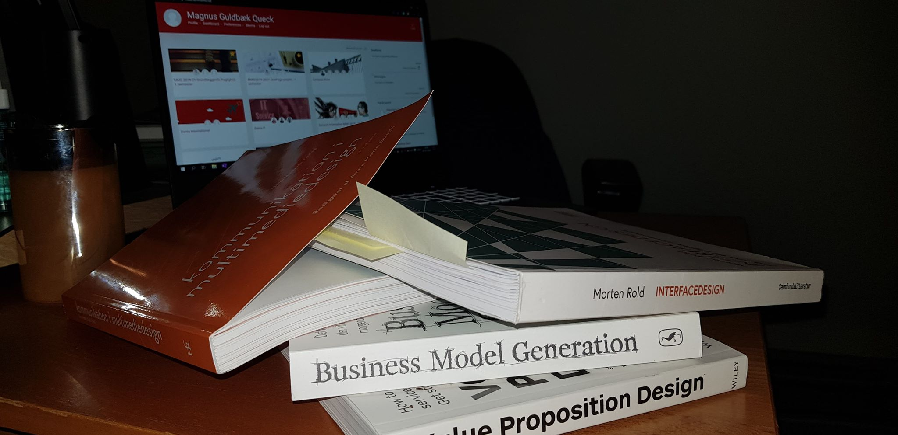

På Multimedie designer uddannelsen slutter vi 1. semester med at lave en portfolje.
Jeg vil her komme ind på mine overvejelser omkring struktur og design - herunder vil jeg også uddybe mine refleksioner og fejlkonklusioner omkring skabelsen af denne side. Kildelisten kan du finde i bunden.
Jeg startede forløbet med at lave en tidsplan over de fire uger vi cirka havde til at lave siden i (eksklusiv juleferien). Herefter gik jeg igang med at samle alt den information og de noter, jeg havde taget i løbet af semesteret. De to første uger gik med at skrive og researche på de mange emner, vi havde været omkring. Det var først da jeg nåede ca. halvvejs med forløbet, at jeg begyndte at fokusere på design og opsætning af selve siden.
Her er en række skabeloner for mine design overvejelser:
Som det kan ses foroven har jeg overvejet mange typer af design. Mine overvejelser var primært hvorvidt jeg kunne lave portiføljen så simpel og brugervenlig som overhovedet muligt. Jeg ønskede, at det skulle være nemt for mig at tilføje flere emner, som 2. og 3. semester ville bringe mere teori til.
Jeg var også sikker på, at en menu ville blive nødvendig, i forhold til hvormange siders teori jeg havde skrevet. Derfor valgte jeg en sikker løsning, som var det meget simple kasse design som kan ses både på forsiden, og under emnerne. Tildels var designet inspireret af vores 'flows' på moodle - som benytter sig af samme "kasse design".
Der findes en menu foroven, når man har valgt et af de fire overordnede emner - denne var tænkt som en slags genvej, for at nå hurtigt til et andet overordnet emne og dermed undgå hovedmenuen.
I forhold til farverne, brugte jeg igen meget tid på at finde på noget som var simpelt men attraktivt. Jeg ville ikke, at farverne skulle forstyre, så jeg valgte en lav kontrast i toppen af siden - som ses med den røde header op imod den varme gule baggrund; som blødt ændre farve når man skroller. Hensigten var at skabe ro, som skulle bidrage til brugervenligheden.
Jeg er tilfreds med det jeg er nået frem til - mest på grund af den lange process, som har været udfordrende. Jeg kigger nu tilbage på det som jeg har skabt som værende noget jeg altid vil kunne tilføje mere til i fremtiden.
Undervejs er jeg stødt på mange problemer - primært i forhold til design og kodning.
Responsiviteten af siden har været et af mine absolute største problemer. Som det er nu fungerer det til min mobil, samt bærbar og stationær skærm. Men jeg har forsøgt med andre smartphones, som viser et andet resultat, hvilket er mig uforståeligt. Min teori er, at min "min-width" er forkert; men efter mange forsøg har det stadig ikke lykkedes mig at fixe.
Da jeg har mange html filer og dertil css stylesheets, har jeg stødt på vanskeligheder hvad responsivt design angår - og har flere gange kopieret én velfungerende css til de andre. Nogle gange har det også resulteret i, at jeg har været nødt til at ændre den enkelte html sti til en css fil, som ikke oprindeligt var ment til den html side. Efter mange frustrationer har jeg valgt at leve med det, jeg har opnået - og har dermed lært for fremtiden at have enkelte 'design style sheets' som skabelon for evt. nye html sider.
Foruden repsonsive problemer har jeg også døjet med generelle design problemer, så som eventuelle menuer og grids, som ikke altid ville fungere efter mit design valg. Ligeledes at få margin/padding til at fylde ud korrekt.
Sidst men ikke mindst har det været vanskeligt at indskrænke den mængde af viden, vi har fået i dette semester - uden porteføljen skulle blive til et leksikon. Jeg har derfor valgt at gå bredt i emner, og indskrænke i uddybelsen af disse.
Her har du en liste over de kilder, hvori teorien kommer fra.
Kilder fra bøger:
Kilder i form at hjemmesider: